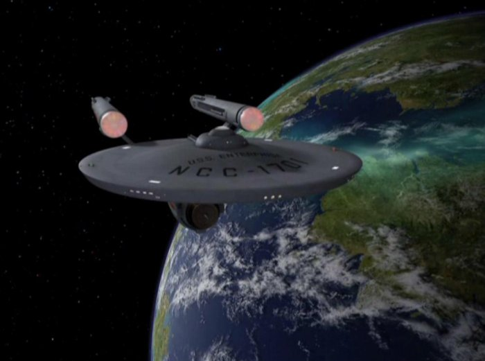

Since its birth, the USS Enterprise, was under the command of Captain Christopher Pike
before circumstances related to his health forced him to resign and name Captain James T. Kirk as
his successor.

FSY 2252
Captin Kirk along with his Sub-Commander, Spock, were present during the attempted
invasion of the Gorn empire upon Earth, when their ships reached a beacon near Pluto.
FSY 2255
With the Gorn succesfully defeated after years of combat from the Entrprise, the Federations
most advanced ship, Kirk and Spock set off to finish them off in the Nebula Prime.
FSY 2255
Despite terrible odds and the near annihilation of the Enterprise, the USS Fredrickson
manages to save the stranded crew from destruction.
FSY 2265
With the Enterprise now restored and Kirk honoured as a Federal Hero, the Federation awards
Kirk with the first ever five year deep space mission to explore beyond known space.
FSY 2266
On this five year mission, The Enterprise must pass into a huge untrackable area of space called
the Barrier Void.
FSY 2267
With most of the ship in despair, the Enterprise is able to receive help from its stellar neighbors,
the First Federation.
FSY 2268
At one point the Enterprise happen upon a stretch of space that allows them to go back in time,
to the crew's confusion and awe, the ships scanners reveal that they are orbiting Earth, in the 1960's.
FSY 2269
The last part of the mission finds the Enterprise engaging an unknown enemy, who shortly reveals itself
to be the dreaded Klingon Empire, a rival to the vast Federation of Earth.